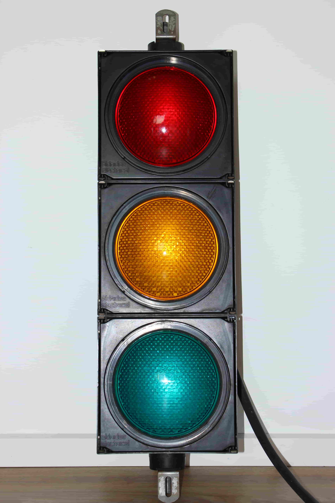
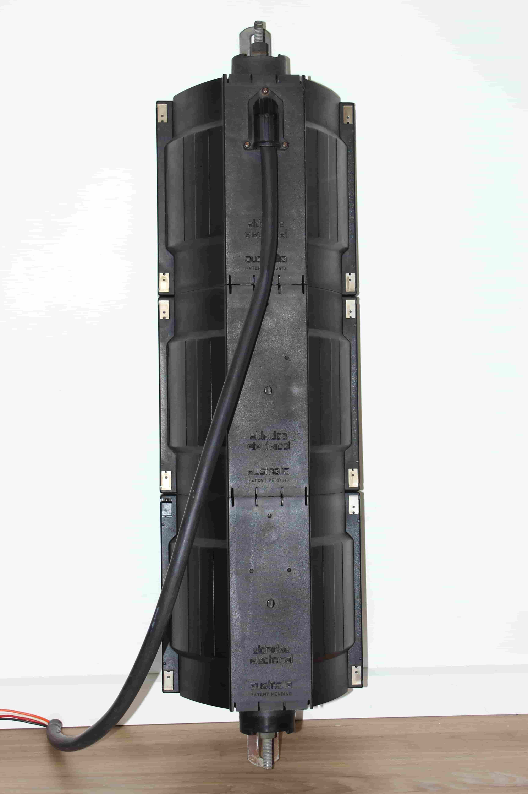
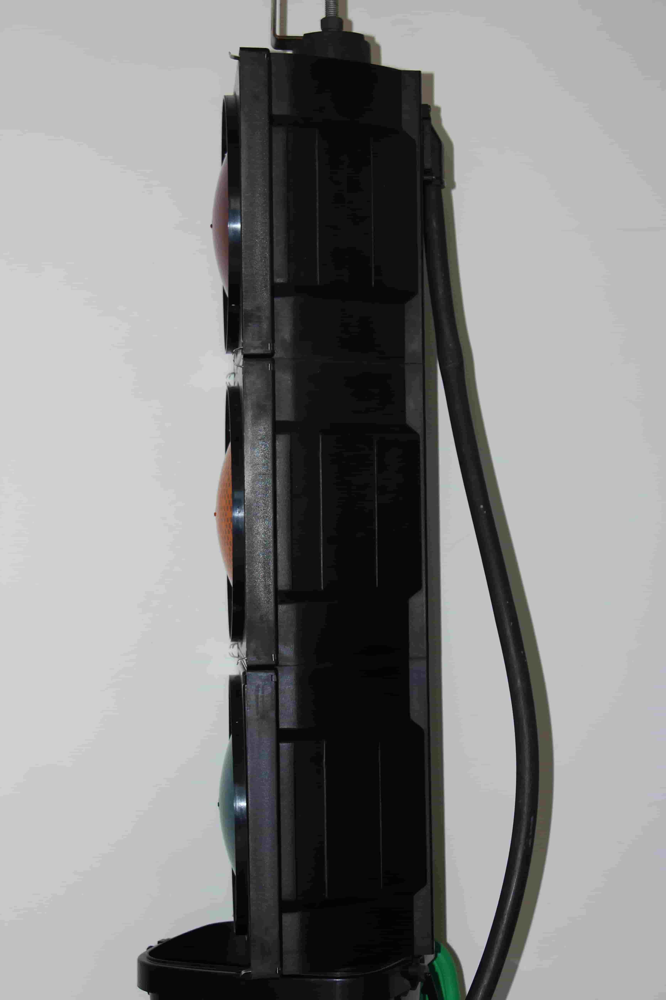
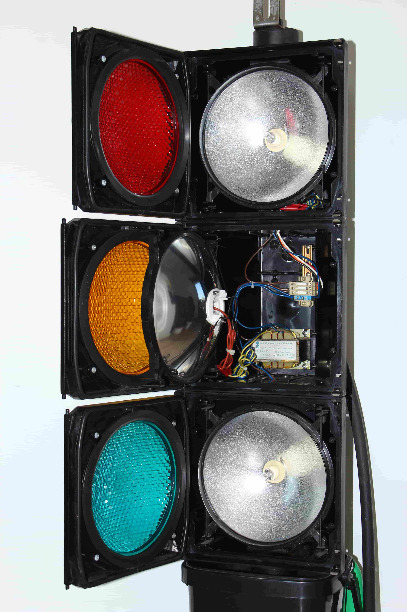
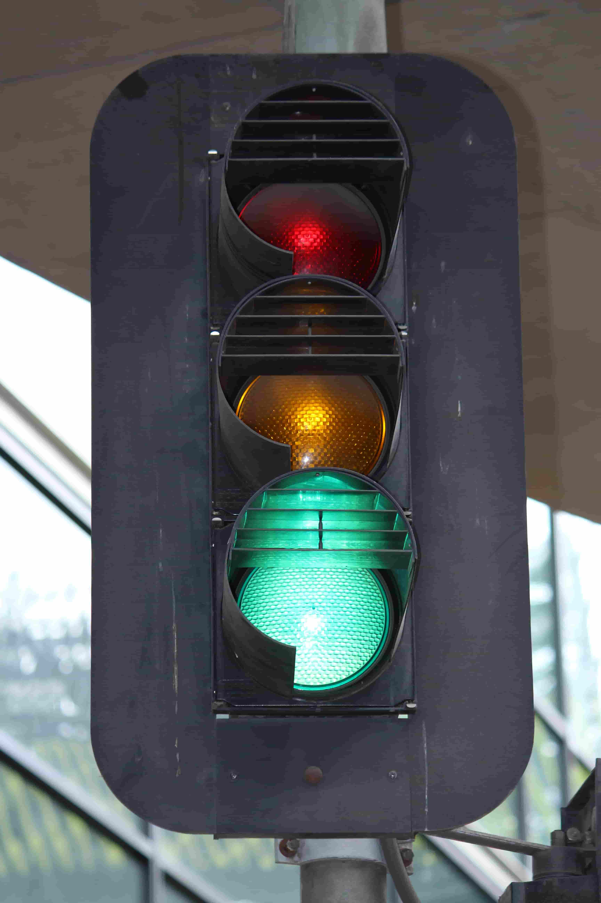
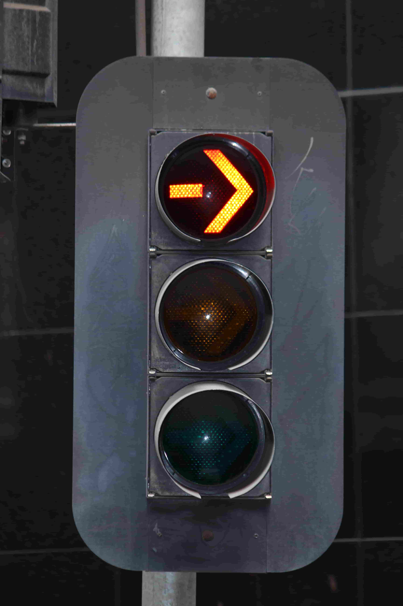
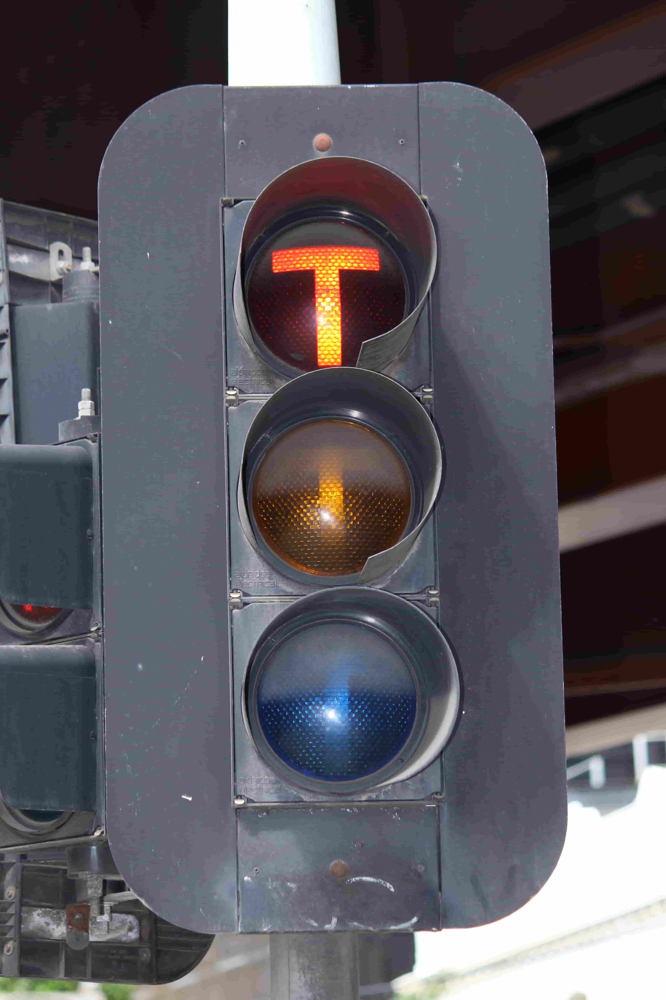
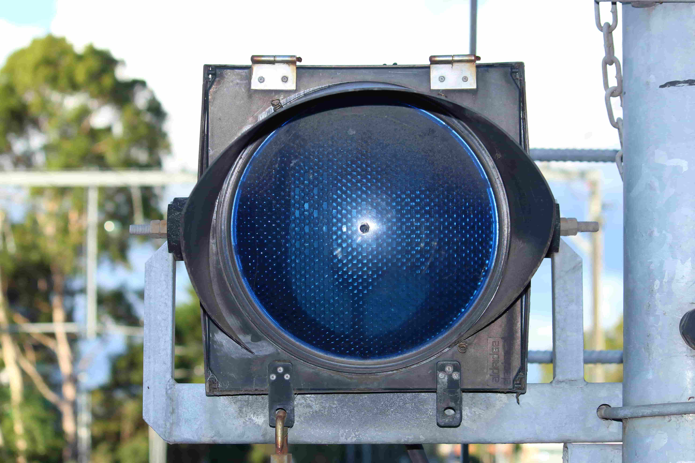
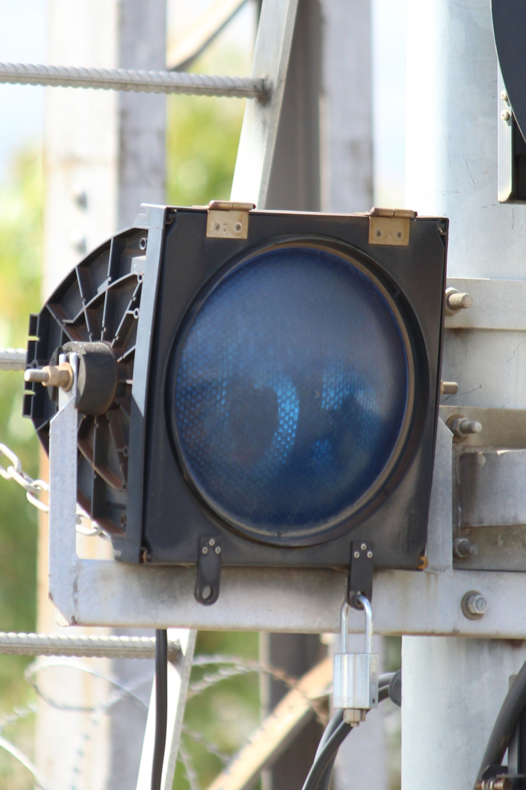

The beginning of the newer style polycarbonate Aldridge signals - These use clips to secure the lens door onto the housing. The light uses 12vac halogen bulbs with a transformer inside.
The front has the 'Aldridge Electrical' logo moulded onto it as well as on the back. Interestingly, the back of the housing seens to have vertical 'ridges,' only present on Aldridge Electrial and select Aldridge Traffic Systems lights.
12" variants are not very common, although they are more common in states such as South Australia. The only common use of them in Victoria is on the metropolitan railway network.
| Front view | Back view | Side view | Internal view |
|---|---|---|---|
|  |  |  |  |
| Images above are from my own collection. | |||
| 8" (200mm) variant | ||
|---|---|---|
| Ball signal | Arrow signal | Tram signal |
|  |  |  |
| Kings Way (northbound offramp)/Walker St, Southbank, VIC. | City Rd/Kings Way, Southbank, VIC. | |
| 12" (300mm) variant | |
|---|---|
|  |  |
| Ringwood Station - Platform 1 (down end) Route indicator; 'C' for Croydon. |
Broadmeadows Station - Platform 1 (down end). When lit, it displays '65', meaning 65km/h speed limit. |
{kind=link}
{kind=link}
{kind=link}
{kind=link}
{kind=link}
{kind=link}
{kind=link}
{kind=link}
{kind=link}